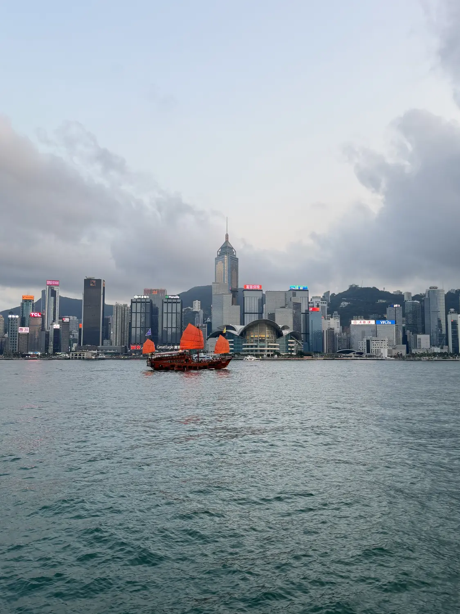
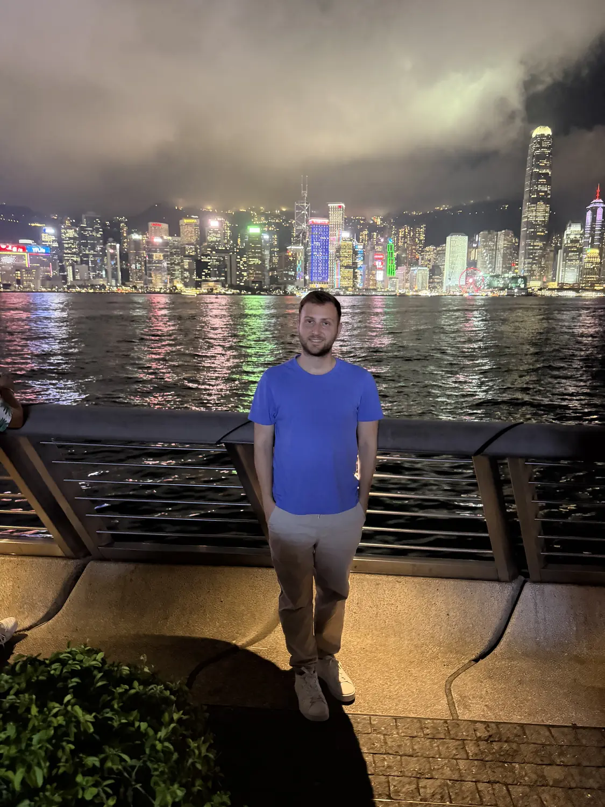

The wow01
Victoria Harbour & the skyline
📍 Tsim Sha Tsui Promenade, Kowloon
This is the view that defines Hong Kong. From the Tsim Sha Tsui promenade on the Kowloon side, the whole of Hong Kong Island's skyline rises across Victoria Harbour — a dizzying, glittering wall of skyscrapers backed by green mountains. Come by day for the classic shot (bonus points if a red junk sails past), and stay into the evening as the towers light up. The free Star Ferry across the harbour is one of the best-value rides in the world.
Best skyline on earthRide the Star Ferry